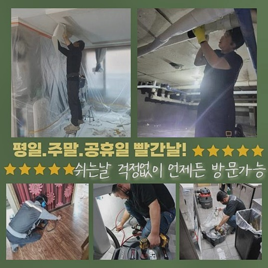
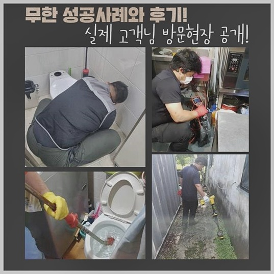
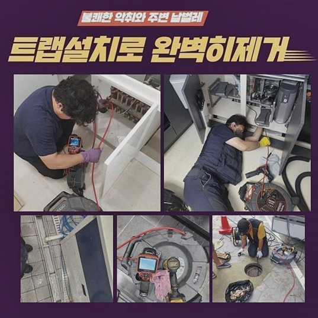
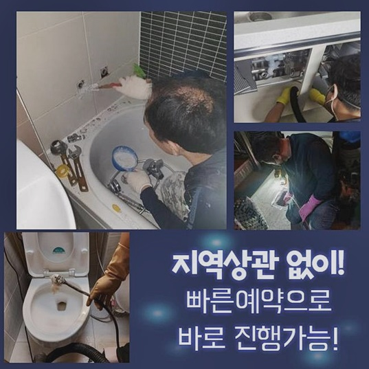
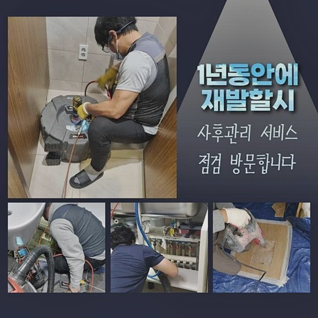

🏠 강서구 내발산동세탁실역류 과해동 하수구청소장비 출장수리
용인시 처인구 배관막힘 전문 시공 후기

📋 작업 개요
- 위치: 용인시 처인구, 수원시 영통구, 화성시 동탄
- 서비스 유형: 배관막힘, 하수구청소, 고압세척, 내시경점검
- 작업 일시:
- 업체명: 하수구수사대 (010-5615-2118)
🔍 문제 상황
강서구 내발산동세탁실역류 과해동 하수구청소장비 출장수리
배수관은 막히게 되는 사태가 생기게되면 불편함들이 어마어마합니다
실제예시를 들어 막힘과 관련한 사항을 일러드리니 참고하면 득이 될거라 생각해요
앞으로 말씀드릴 현장은 집합건물의 관리자가 문의해주셨습니다
의뢰자께선 주기적으로 배수관 검수를 했지만 예고없이 구분건물 내 화장실쪽에도 막히는 증세가 야기된다 말씀하셨어요
이전에는 소개를 받아 근방의 배관공에게 문의를 했지만알아보니 스프링장치를 제외하고도 전문적인 장비들이 있다는것도 아시고 이를 온전히 고쳐내는 업체들이 상주하는것을 인지하게 되었고 그 중 저희전문진에게 연락하셨어요
꾸준히 점검을 실시해도 하수들이 배출되지않으면 원인들은 가가호호 배관설비에 있지않고 중앙시설에 잔존할 수 있다는걸 깨닫게하는 예시를 일러드리겠습니다
증상을 전달받고 빨리 찾아뵌 건물은 한 다세대 구분건물였고, 조사끝에 원인은 바깥에 있었습니다

🔎 원인 분석
💡 전문가 진단: 정밀 진단 장비를 사용하여 슬러지의 고착 여부를 판명하고 타격/세척 작업을 실시했습니다.
바깥의 집수설비의 입구를 여니 제대로 배출이 안되는 모습이였고 하부엔 오염되어있는 기름때가 자리하고있어서 해결이 시급한 상태였는데요
외부하수구에도 이물질들이 빼곡하다면 내부도 오염되어있을거란 염두에두고 내시경장비를 사용해 정밀검수를 실시했죠
이 시점에 쓰이는 내시경의 경우 협소한 하수도를 보여주는 내시경기기로 시야가 넓고 정확한 진단을 도움으로서 구불구불한 배수관에서도 문제들을 포착하죠
이러한 이유로 잔여물질이 얼마나 존재하는지 정확하게 관찰할 수 가능하기에 오늘의 현장에서는 집수부분에 기름기들이 켜켜이 쌓인 형태였으며 어디위치에 문제가 발발한건지 봐야했죠
증세가 야기된 구간마다 내시경장치를 놓고 해당하는 부위가 어디인가 알기위해서 탐지기기를 이용하여 위치들을 찾기 시작했죠
탐지기기는 내시경의 끝머리를 배수관에 넣으면 지면에서 살피면 내시경장치가 위치한 부위에서 신호들이 발생하고그 반경이 20cm로 큰 무리는 없죠
하수관은 직접적으로 안보이기에 어디가 증상이 있는지 추측하는데에는 구조자체가 복잡하므로 관로탐지기는 길이가 긴 하수도를 청소하는 경우에 활용되요
내시경은 내측에서 떨어져있어도 지점을 가늠할수 있지만 내시경케이블들을 늘려주며 투입하면 지금의 지점이 어디인건지 알수가없어서 탐지기기와 찾게됩니다
한 곳에서만 작업들을 수행하기엔 심부에도 슬러지가 많았으므로 각 구간마다 장비들을 가용하여 접촉하는 곳까지 이물제거를 수행해주는것이 적합할거라고 생각했죠

🔧 작업 과정
고압청소방법도 사용하긴하지만 해당 현장은 외측에서 내부엔 굴곡이 져있고 길지않은 길이로인해 샤프트장치를 써서도 충분해보였어요
고객님에게도 앞서 실시할 작업들과 관련해 설명하고 바깥부분까지 증상이 심한 상태였으므로 지금까지 작업을 실시해도 개선들이 보이지않아 저희전문진은 집수부도 세척하기로 했어요
본래엔 배수가 진행되어야하나 통로가 어느곳인지 알수없을만큼 문제가 심한 모습이였는데 장기간동안 단단해진 뒤엉킨 슬러지들도 많았죠
석션을 넣어서서 안측의 이물질을 흡입했는데 구간마다 고인 물이 내려가질 못해 오염물이 많았습니다
석션장비는 진공청소기의 기능처럼 차이나는 압들을 통해 세척해주는 장치인 까닭에 연결부의 배수구를 막아준다면 진공이 유지되며 쎈 흡입력을 유지할 수 있어요
반복적인 흡입을 수행하면 부유하던 오수들이 걷혀지면서 존재하는건 고착된 이물이기에 고착물의 청소가 빠른 시간안에 이어지죠
다음으로 샤프트로 넣어서서 배관의 세척을 이어갔는데 샤프트기기는 드릴들을 꽂아주고 킨다면 회전되는 힘들이 라인선으로 흘러가 이물제거를 담당하는 사슬로 전달시켜주는 것이죠
그런다면 사슬부분의 체인들이 돌아가며 심층부의 오염물을 타겟으로하여 탈락하게끔하고 배관컨디션을 복구시키는데석션만으로는 작업이 안되었던 부위를 샤프트로 보충해서 청소를 말끔하게 합니다
위처럼 세척을 이어갈때에는 저희의 전문가들은 내시경기기를 투입시켜 송출부를 주시하면서 청소시키기에 샤프트가 이용되면서 빠진 데가 없게 면밀한 세척이 이뤄질 수 있는것입니다
입구에서부터 스케일링과정이 수행되고 불현듯 깊숙한 지점으로 진행시켜주었고 꺾이는 구조를 보았고 외부쪽으로 나아가는 구간에 도달한것을 깨달았죠
그런 다음엔 작업위치를 바꿔 집수 수출라인부터 청소과정을 실시하여 잔해가 쌓여 물빠짐이 이뤄지지않았던 집수정의 수출구는 이물을 모조리 털어주었더니 물빠짐이 이뤄지는걸 목격했어요
마무리 과정으로 샤프트장치를 넣어서서 안쪽을 꼼꼼히 깨끗히하고 해당 과정이 끝나고내시경으로 매립된 배관들은 잘 원상복구된 것을 검수한 뒤 외부라인도 끝마쳤습니다
집수시설 근처도 정리하고 발걸음을 돌렸습니다


✅ 작업 완료
해당 현장처럼 외부설비까지 막혀버렸던 하수관도 저희전문진은 세척해주어서 원상복구시킨 곳이였어요
여러분한테 문제들이 생기게되어 시공경험이 충부한 배관의 해결사들이 작업을 해줬음하시면 저희들에게 맡겨만주십시오!
전국어디든 한시간안팎으로 도착까지 진행되며 중요하게 탄탄한 결과들을 우선으로하니 우려치마시옵고 연락해보세요!
설명드린 내용을 보시고 질의사항이 있으시면 여쭈시면 친절하게 도와드리니 안심하세요!


⚠️ 하수구 배관 막힘 예방 및 관리 가이드
- ✅ 머리카락, 비닐, 물티슈 등 물에 분해되지 않는 이물질은 절대 흘려보내지 마세요.
- ✅ 기름기 많은 식기는 설거지 전 키친타올로 먼저 기름때를 닦아내세요.
- ✅ 주기적으로 배수구에 뜨거운 물을 가득 부어주어 유지방 고착을 방지하세요.
- ✅ 작업 후 1년 이내 재발 시 무상 A/S 보증 서비스를 제공합니다.
💡 핵심 정리
- 확실한 장비 작업(내시경 점검 및 샤프트 스케일링)으로 원인을 뿌리 뽑습니다.
- 작업 후 1년 이내에 동일한 부위 재발 시 100% 무상 A/S 서비스를 보장합니다.
- 서울 · 경기 · 인천 전 지역에 24시간 언제든 긴급 출동할 수 있도록 항시 대기 중입니다.
❓ 자주 묻는 질문 (FAQ)
🚨 용인시 처인구 배관막힘 문제로 고민이신가요?
정확한 원인 진단과 확실한 시공으로 재발 없는 해결을 약속드립니다.
24시간 긴급 출동 | 서울 · 경기 · 인천 전지역 | 1년 내 재발 시 무상 A/S